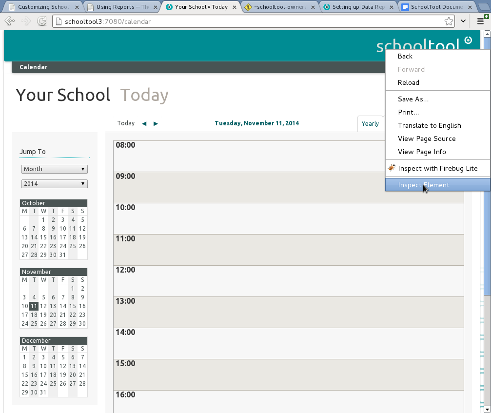
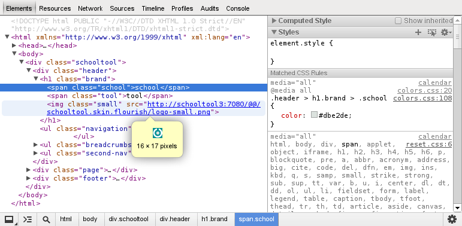
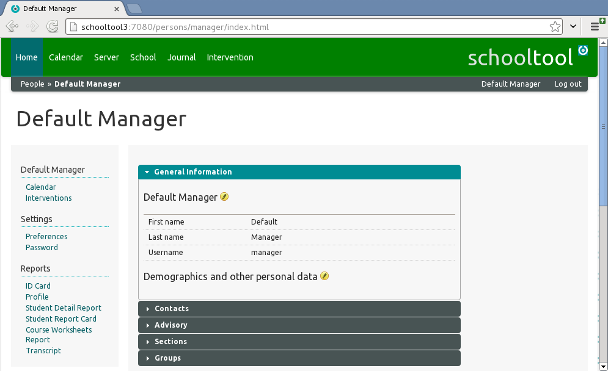
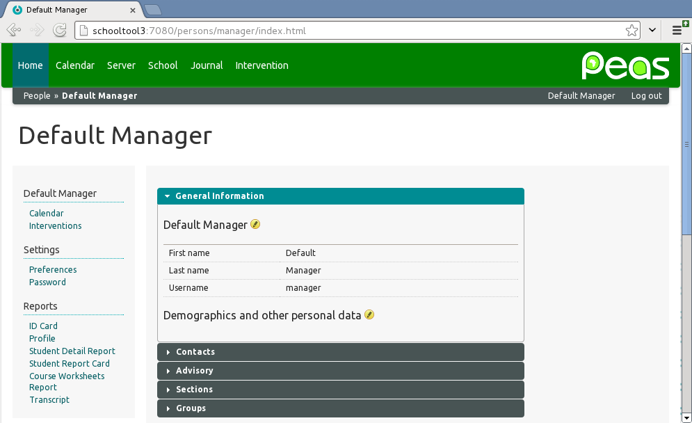
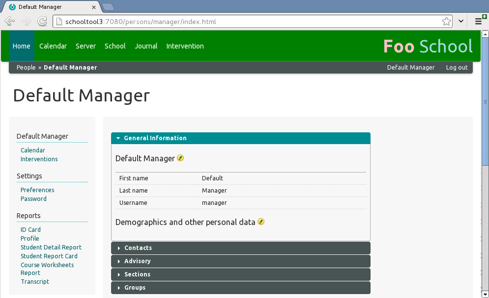
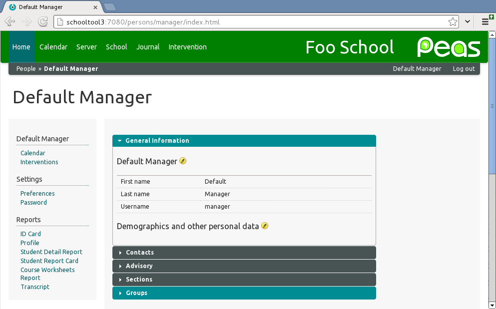

Customizing SchoolTool CSS¶
CSS Overrides¶
For sites that wish to change the default appearance of the SchoolTool administrative interface, it is possible to override SchoolTool’s Cascading Style Sheets with your own customized styles.
In the past, this could only be accomplished by modifying SchoolTool core files, which was undesirable because changes would be lost during upgrades.
Requirements¶
Overriding SchoolTool’s default styles and images with your own customizations will require administrative access to the server. It will also require knowledge of HTML and CSS, but no Python programming experience is necessary.
The custom-css Directory¶
As of SchoolTool 2.8.3, there is now a custom-css directory for your custom
styles and images, located at:
/etc/schooltool/standard/custom-css/
Because the custom-css directory is located in /etc/schooltool/ (along
with other SchoolTool configuration files), any custom styles and images stored
here will persist across SchoolTool and system upgrades.
The custom.css File¶
By default, the custom-css directory will contain one file:
/etc/schooltool/standard/custom-css/custom.css
Add your CSS rules here, by logging on to the server and editing the file using your favorite text editor.
Adding Resources¶
Because the entire custom-css directory gets registered as a resource
library, any file added to this directory may be accessed in your custom CSS.
For example, if you upload image.png to the custom-css directory,
you can access that
resource at /@@/schooltool.flourish.custom/image.png, or simply use
the relative URL in your CSS, for clear and concise
code, for example url("image.png").
Examples¶
The easiest way to determine what CSS rules to override is to use a DOM inspector, such as that provided by Google Chrome’s built-in Developer Tools, or the Page Inspector provided by Mozilla Firefox Developer Tools (in either browser, right-click on a webpage element and select “Inspect Element” from the context menu).

This will allow you to use the inspector to examine and modify the structure and layout of a webpage, so that you can pinpoint the CSS rules needed to modify the appearance of a page element without the need to search through all the CSS files included in the SchoolTool source code.

In this example, we are inspecting the <h1 class="brand"> element in the
SchoolTool page header, which contains the text and image elements of the
SchoolTool logo.
Changing Colors¶
To change the background color of the header from the default (hexadecimal RGB
#008c93) to another color specified by hex value or name (in this example,
green), edit the custom.css file:
sudo vim /etc/schooltool/standard/custom-css/custom.css
and add the following block of CSS code:
.header ul.navigation {
background-color: green
}
Then load any page of the SchoolTool administrative interface in the browser to see the new green background color in the header.

Replacing SchoolTool Logo (image)¶
To replace the default SchoolTool logo with a custom logo.png image, we will
first need to hide the default logo. Edit the custom.css file:
sudo vim /etc/schooltool/standard/custom-css/custom.css
and add the following block of CSS code:
.header > h1.brand span, .header > h1.brand img {
display: none;
}
Then, upload the desired logo image (in this case, logo.png) into the
custom-css directory. In this
example, we will use the PEAS logo, which is a transparent PNG image 195 pixels
wide and 40 pixels high; your organization’s logo may need to be resized to fit
tidily into the site template.
Edit the custom.css file:
sudo vim /etc/schooltool/standard/custom-css/custom.css
and add the following block of CSS code:
.header > h1.brand {
background: url("logo.png") no-repeat scroll right top rgba(0, 0, 0, 0);
height: 40px;
width: 195px;
}
This will set the logo.png image as the background for the <h1
class="brand"> element in the SchoolTool page header.

Replacing SchoolTool Logo (text)¶
If you’d like to use text instead of a background image, this is also possible
using the ::after and ::before CSS selectors:
Again, we will first need to hide the default logo. Edit the custom.css
file:
sudo vim /etc/schooltool/standard/custom-css/custom.css
and add the following block of CSS code:
.header > h1.brand span, .header > h1.brand img {
display: none;
}
Then, edit the custom.css file:
sudo vim /etc/schooltool/standard/custom-css/custom.css
and add the following block of CSS code:
.header > h1.brand::before {
content: "Foo ";
color: pink;
font-weight: bold;
}
.header > h1.brand::after {
content: "School";
color: lightblue;
}
This will yield the result seen in the following screenshot:

Replacing SchoolTool Logo (text and image)¶
With a little CSS finesse, we can even replace the SchoolTool logo with our own custom logo combining HTML text and an uploaded image.
Again, we will first need to hide the default logo. Edit the custom.css
file:
sudo vim /etc/schooltool/standard/custom-css/custom.css
and add the following block of CSS code:
.header > h1.brand span, .header > h1.brand img {
display: none;
}
Then, edit the custom.css file:
sudo vim /etc/schooltool/standard/custom-css/custom.css
and add the following block of CSS code:
.header > h1.brand::before {
content: "Foo School";
padding-right: 150px;
}
.header > h1.brand {
background: url("logo.png") top right no-repeat;
width: 350px;
height: 40px;
}
This will yield the result seen in the following screenshot:
